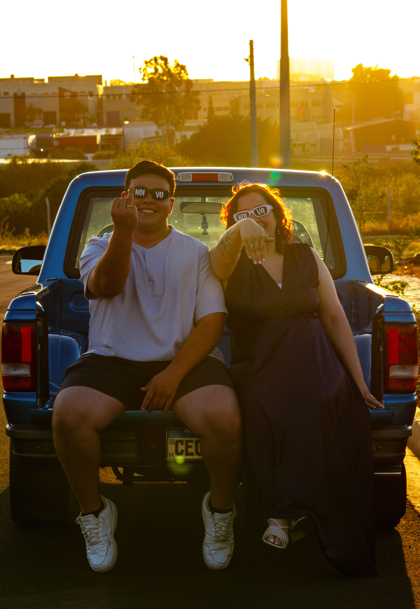
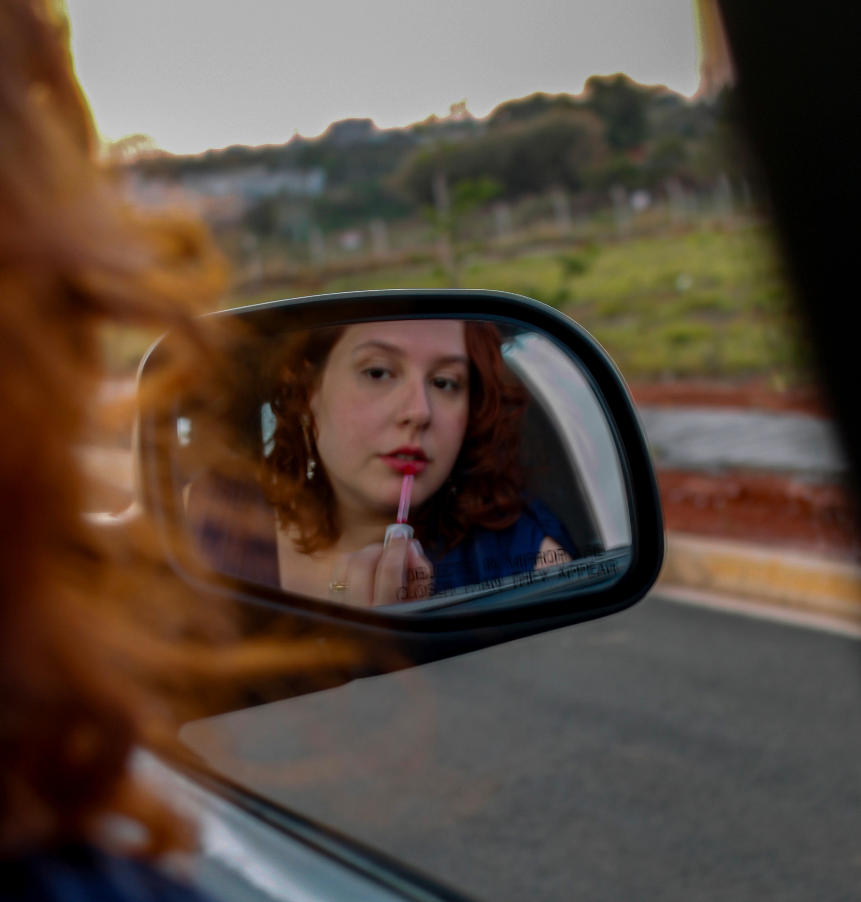

Conceito
"Ensaio de Casal na Natureza" nasceu de um exercício de presença: observar e registrar a conexão entre duas pessoas como se cada instante fosse único. A série explora como gestos, olhares e silêncios se integram às paisagens naturais, criando composições sensíveis e orgânicas.
O desafio técnico foi capturar essa intimidade utilizando apenas luz natural, sem interferências artificiais, respeitando o ambiente e preservando a autenticidade de cada momento.


Direção visual
A paleta foi intencionalmente dessaturada em pós-produção, acentuando contraste e texturas. Cada imagem passou por tratamento individual no Lightroom e Photoshop para garantir coesão na série.
- Shooting de 2 dias em diferentes horários e condições de luz
- Mais de 400 fotos capturadas, 24 selecionadas para a série final
- Pós-produção com tratamento de cor consistente entre os frames
- Composição baseada na regra dos terços e linhas de fuga
"A cidade fala — basta aprender a olhar nos lugares onde as pessoas raramente pausam o olhar."
Galeria selecionada




Aprendizados
Este projeto consolidou a importância da paciência e da observação na fotografia. A melhor foto raramente é a primeira — é a que aparece depois de aguardar a luz certa ou o momento em que o espaço se organiza naturalmente.